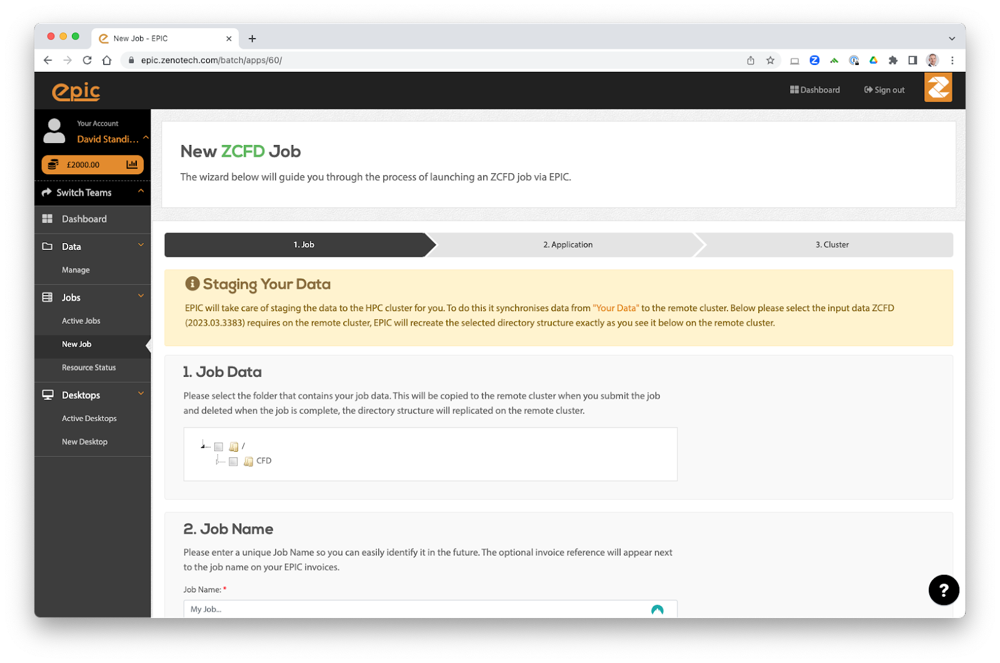

EPIC¶
For larger jobs or where resource availability is limited, EPIC allows users to submit zCFD jobs to a range of on-demand computing resources in an intuitive and secure way. EPIC also provides access to interactive post-processing environments without the need to download large data files.
EPIC Desktops¶
What are EPIC Desktops?¶
EPIC provides a way of starting an interactive Linux desktop in the Cloud, these are known as EPIC Desktops. The Desktops come with a range of preinstalled software, including zCFD. Data can automatically be synchronised between EPIC and the Desktops you launch.
Launching a desktop¶
To launch an EPIC Desktop you need an account on EPIC, you can sign up directly on the website for free. Once you have an account, navigate to Desktops on the right hand menu to launch a new Desktop. The desktops come in a variety of sizes and all have GPUs which can be used for running zCFD in GPU mode as well as for accelerated visualisation.
If you organisation already uses EPIC then speak to your account manager for an invite to join the correct EPIC team.
Managing Data¶
The data you select when launching the desktop will be made available to you in the /home/epic/data directory on the desktop. If you selected the “Online” option when launching the desktop then any changes or new files you make in that directory will be synchronised with EPIC.
Each node also has a /scratch/ directory, this is a local high performance drive that only exists while the node is online. It is recommended to use this directory for running any zCFD jobs on the node and then copy the results back to /home/epic/data when you are finished.
Note /scratch/ will be deleted when the node terminates.
Modules¶
The desktops use Linux modules to load applications. To see what applications are available launch a new terminal and run:
module avail
You can then load the application using the module load command, for example to load the latest zCFD:
module load zcfd/latest
This will add zCFD to your path and enable you to start using it in that terminal.
Loading zCFD¶
The best way to load zCFD is to load the module and then run the activate script, this will activate the full zCFD environment.
For example:
module load zcfd/latest
source activate
You can then start using zCFD:
run_zcfd
zCFD Licence¶
After loading zCFD you need to specify which licence to use, you can do this by either copying your zcfd.lic file into your working directory, alongside your mesh and control dictionary, or by setting the RLM_LICENSE_PASSWORD environment variable. The password can be found inside your zcfd licence file.
For example:
module load zcfd/latest
source activate
export RLM_LICENSE_PASSWORD=mypassword
Running Paraview¶
Paraview is also available on the desktops and can be loaded using modules and then started from the terminal:
module load paraview
paraview
Using pvserver¶
To load a zCFD .h5 file you can use the Paraview server that is bundled with zCFD and then connect to it using Paraview on the desktop. To start the server run the following in the terminal:
module load zcfd/latest
source activate
pvserver
You can then launch Paraview from another terminal by running:
module load paraview
paraview
By default pvserver will be listening for a connection on port 11111. To connect to the zCFD pvserver do the following in Paraview:
From the File menu select Connect.
Click “Add server”.
Change the server Name to “zcfd” but leave all the other settings as the defaults, click “Configure”. On the next screen just click “Save”.
Click “Connect”.
The connection should be made and you will see a “Client connected” message output by pvserver.
You can then load your zCFD .h5 files via pvserver
Note The version of Paraview used to connect must match the version used in zCFD, if you get a client connection error please check the version numbers.

{kind=link}